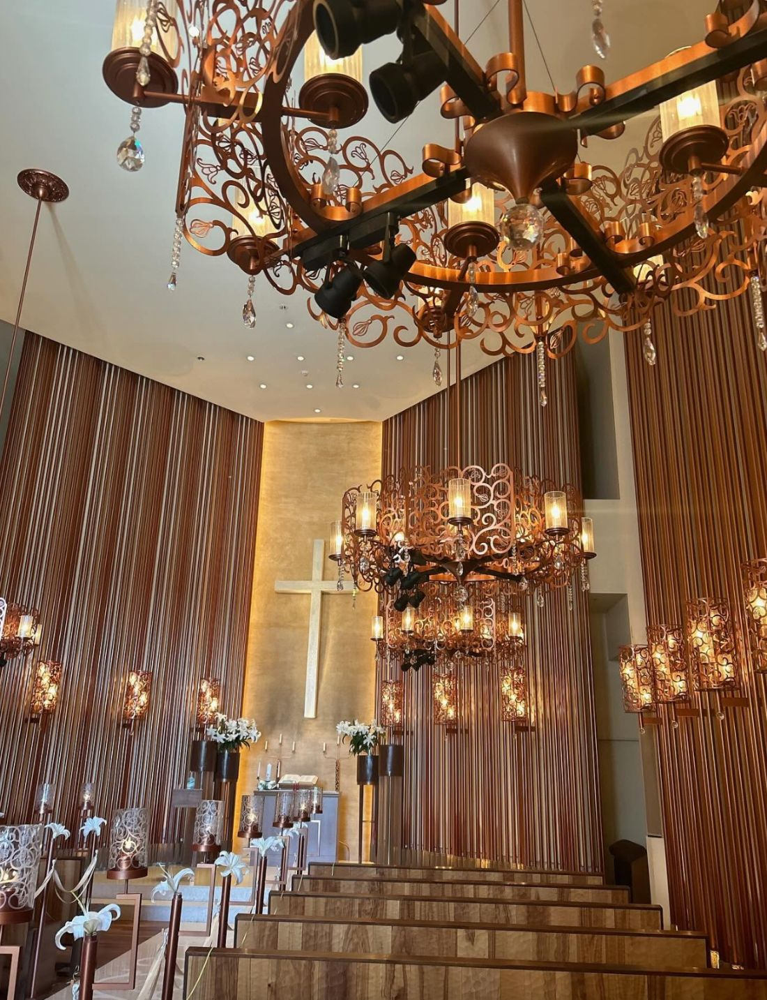
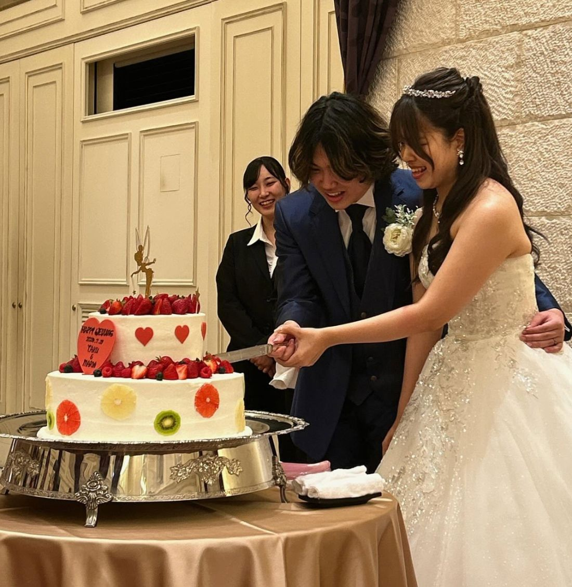

大原・ホテル・ブライダル専門学校のウエディングセミナーにお招きいただき、参加してまいりました。


今回のセミナーは、2年生の集大成。挙式、そして披露宴を体験させていただきました。
学びの締めくくりとして、本番さながらの式をつくり上げる。その一つひとつの所作から、学生の皆さまの一生懸命さが伝わってきました。緊張しながらも、これまで積み重ねてきたものを出しきろうとする姿は、本当に立派でした。
そして会場には、これから専門学校を目指す高校生の皆様の姿もありました。
先輩たちの発表を見つめる、そのキラキラとした眼差し。「自分もこうなりたい」という憧れが、そのまなざしにはっきりと表れていました。この光景こそ、ウェディングの魅力が次の世代へと受け継がれていく、その瞬間だったように思います。
大原・ホテル・ブライダル専門学校の皆様、ご招待いただきありがとうございました。
この日、私たちは改めて、大切な問いを受け取りました。私たち企業が、これからウェディングを目指したいという人材を、どう増やすことができるのか。そして、ウェディング業界に来てくれた人材を、どう育てていくべきか。
先日のリアルカンファレンスでも「採用」をテーマに学びましたが、人材を増やし、育てることは、まさに業界の未来そのものです。目の前で輝いていた学生さんや高校生の皆さんが、いつかこの業界で活躍し、そのまた次の世代へと想いを繋いでいく。そんな流れをつくっていくために——
愛知ウェディング協議会としても、取り組んでまいります。
愛知ウェディング協議会 カレッジ部会では、学校との連携・学生の参画を通じて、業界の未来を担う人材とともに歩んでいく取り組みを進めています。